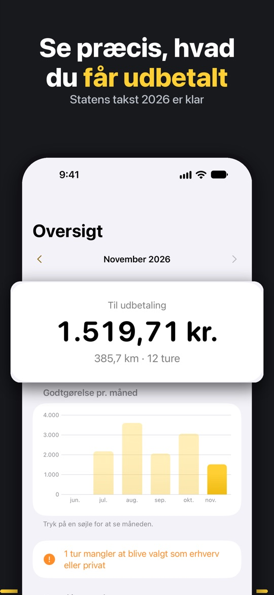
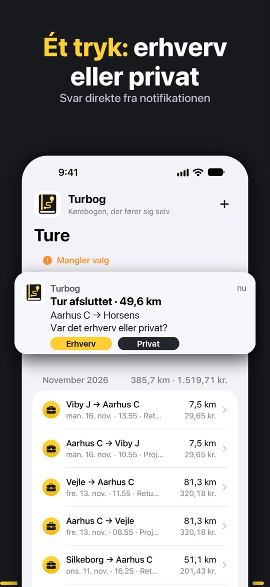
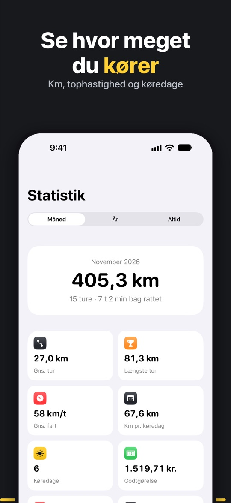
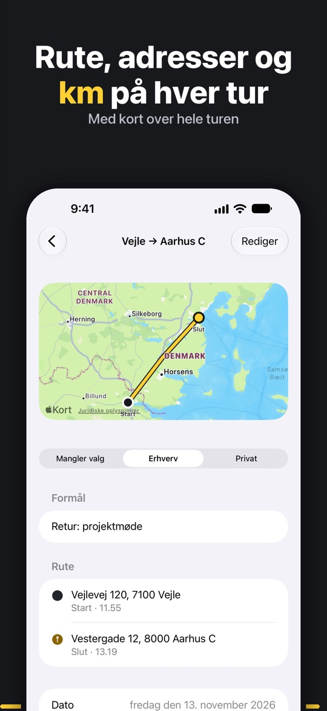
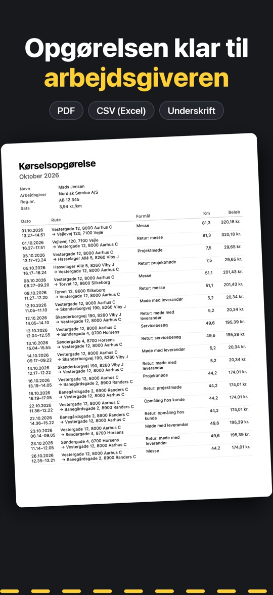
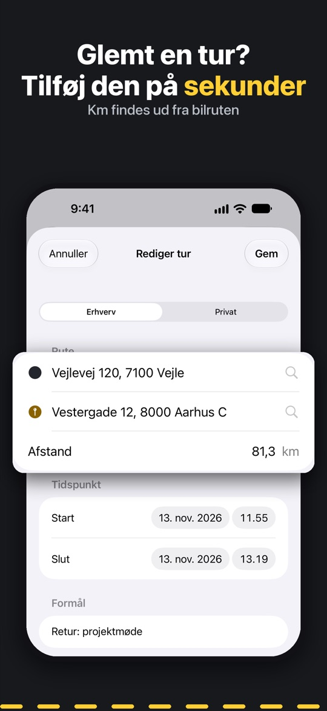
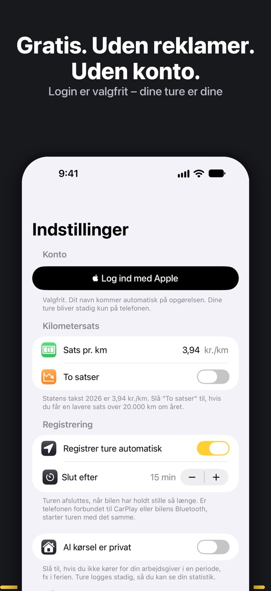

Turbog i CarPlay
Start og afslut ture, se dagens kilometer og vælg erhverv eller privat på bilens skærm.
Turbog registrerer dine køreture automatisk og viser præcis, hvor meget du skal have udbetalt i kørselsgodtgørelse. Ingen papir, ingen regneark, ingen glemte ture.
Hent gratis i App StoreTil iPhone · Gratis · Uden reklamer · Ingen konto påkrævet
Turbog er lavet til dig, der kører i din egen bil for din arbejdsgiver – fx sælgere, håndværkere, servicefolk, konsulenter og hjemmeplejen.
01 · Når du kører
Turen starter af sig selv, når du kører. Rute, adresser og kilometer gemmes med GPS – også når telefonen ligger i lommen.
02 · Når bilen holder stille
Når bilen holder stille, spørger Turbog: erhverv eller privat? Svar direkte fra notifikationen eller på bilens CarPlay-skærm.
03 · Sidst på måneden
Send månedens opgørelse som PDF eller Excel til din arbejdsgiver med dato, rute, formål, kilometer og beløb.
Start og afslut ture, se dagens kilometer og vælg erhverv eller privat på bilens skærm.
Gem hjem og fast arbejdsplads, så advarer Turbog om kørsel, der normalt ikke giver skattefri godtgørelse.
Se hvor meget du kører, din længste tur, hvilke dage du kører mest, og hvor stor en del der er privat.
Tilføj den manuelt. Adressen findes for dig, og kilometer beregnes ud fra bilruten.
Har et stop ved tanken delt én tur i to? Slå dem sammen med ét tryk.
Ingen reklamer og ingen sporing. Turene gemmes på din iPhone og i din egen iCloud.
Skriv, hvor mange kilometer du kører for din arbejdsgiver om måneden. Beregneren bruger statens satser for skattefri kørselsgodtgørelse i 2026.
Kører du mere end ca. 1.667 km om måneden, rammer du grænsen på 20.000 km om året, og resten af året gælder den lave sats.
Læs mere om satserne og reglerne for 2026 →
Fører du hellere kørebog i Excel? Hent den gratis skabelon.
Statens takst for 2026 er udfyldt på forhånd. Du kan selv ændre satsen og slå to satser til, hvis du kører over 20.000 km om året.







Turbog er gratis. Der er ingen reklamer, og du behøver ikke oprette en konto.
Så ture kan registreres, uden at du åbner appen. Placeringen bliver på din telefon og i din egen iCloud.
Tjek under Indstillinger → Turbog på din iPhone, at placering står til "Altid", og at Bevægelse og fitness er slået til. Du kan altid starte en tur med + i appen.
Ja, du kan bruge den som kørebog. Satserne og opgørelsen i appen er dog lavet til lønmodtagere, der får skattefri kørselsgodtgørelse fra deres arbejdsgiver.
Ja. Turene ligger i din iCloud, når du er logget ind med samme Apple-id.
Ja. Slå "Al kørsel er privat" til under Indstillinger. Så gemmes turene som private, og du bliver ikke spurgt.
Har du andre spørgsmål eller problemer, så skriv til support@turbogapp.dk.
Hent Turbog gratis og se, hvad du skal have udbetalt allerede efter første tur.
Hent gratis i App Store